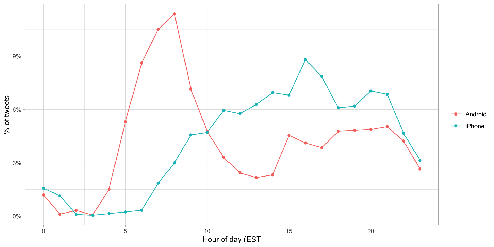

Lecture 4
2023-11-02
First things first: we need to load the necessary libraries
During the 2016 US presidential election, then candidate Donald J. Trump used his twitter account as a way to communicate with potential voters.
On August 6, 2016, Todd Vaziri tweeted1 about Trump that “Every non-hyperbolic tweet is from iPhone (his staff). Every hyperbolic tweet is from Android (from him).”
Data scientist David Robinson conducted an analysis to determine if data supported this assertion. Here, we go through David’s analysis to learn some of the basics of text mining.
We are going to use the data frame called trump_tweets.
You can download tweets from twitter using rtweet package. But we will use an already compiled data set.
See what trump_tweets looks like.
# A tibble: 6 × 8
source id_str text created_at retweet_count in_reply_to_user_id_…¹
<chr> <chr> <chr> <dttm> <int> <chr>
1 Twitter… 69710… "Fro… 2009-12-23 12:38:18 28 <NA>
2 Twitter… 63127… "Tru… 2009-12-03 14:39:09 33 <NA>
3 Twitter… 60908… "Wis… 2009-11-26 14:55:38 13 <NA>
4 Twitter… 57757… "Don… 2009-11-16 16:06:10 5 <NA>
5 Twitter… 53646… "--W… 2009-11-02 09:57:56 7 <NA>
6 Twitter… 52031… "--F… 2009-10-27 10:31:48 4 <NA>
# ℹ abbreviated name: ¹in_reply_to_user_id_str
# ℹ 2 more variables: favorite_count <int>, is_retweet <lgl>How many tweets are there?
Let’s look at tweets by source:
We are interested in what happened during the campaign:
# A tibble: 3,950 × 8
source id_str text created_at retweet_count in_reply_to_user_id_…¹
<chr> <chr> <chr> <dttm> <int> <chr>
1 Android 61206… Why … 2015-06-19 20:03:05 166 <NA>
2 Android 61206… I li… 2015-06-19 20:15:22 1266 <NA>
3 Android 61207… Mexi… 2015-06-19 20:54:25 1033 <NA>
4 Android 61208… Drug… 2015-06-19 21:22:29 1578 <NA>
5 Android 61240… My s… 2015-06-20 18:48:43 86 <NA>
6 Android 61241… Than… 2015-06-20 19:25:21 299 <NA>
7 Android 61242… Who … 2015-06-20 19:57:54 1270 <NA>
8 Android 61274… .@Ka… 2015-06-21 17:28:29 165 <NA>
9 Android 61275… .@Ma… 2015-06-21 18:12:02 104 <NA>
10 Android 61276… The … 2015-06-21 18:50:55 94 <NA>
# ℹ 3,940 more rows
# ℹ abbreviated name: ¹in_reply_to_user_id_str
# ℹ 2 more variables: favorite_count <int>, is_retweet <lgl>We are interested in what happened during the campaign:
campaign_tweets |>
mutate(hour = hour(with_tz(created_at, "EST"))) |>
count(source, hour) |>
group_by(source) |>
mutate(percent = n / sum(n)) |>
ungroup() |>
ggplot(aes(hour, percent, color = source)) +
geom_line() +
geom_point() +
scale_y_continuous(labels = percent_format()) +
labs(x = "Hour of day (EST", y = "% of tweets", color ="") + theme_light()
The tidytext package helps us convert free form text into a tidy table. In this package text is broken down into tokens and then tokens are analyzed. Here is a simple example:
What does ”example” look like ?
We make a table of words. Here the table is of lines of a poem.
We will next break the lines down into words.
Now let’s look at an example from the tweets.
Great to be back in Iowa! #TBT with @JerryJrFalwell joining me in
Davenport- this past winter. #MAGA https://t.co/A5IF0QHnic [1] "great" "to" "be" "back"
[5] "in" "iowa" "tbt" "with"
[9] "jerryjrfalwell" "joining" "me" "in"
[13] "davenport" "this" "past" "winter"
[17] "maga" "https" "t.co" "a5if0qhnic" Let’s remove some garbage.
[1] "great" "to" "be" "back"
[5] "in" "iowa" "tbt" "with"
[9] "jerryjrfalwell" "joining" "me" "in"
[13] "davenport" "this" "past" "winter"
[17] "maga" Now we are ready to extract the words for all our tweets.
# A tibble: 68,061 × 8
source id_str created_at retweet_count in_reply_to_user_id_…¹
<chr> <chr> <dttm> <int> <chr>
1 Android 61206308218… 2015-06-19 20:03:05 166 <NA>
2 Android 61206308218… 2015-06-19 20:03:05 166 <NA>
3 Android 61206308218… 2015-06-19 20:03:05 166 <NA>
4 Android 61206308218… 2015-06-19 20:03:05 166 <NA>
5 Android 61206308218… 2015-06-19 20:03:05 166 <NA>
6 Android 61206308218… 2015-06-19 20:03:05 166 <NA>
7 Android 61206308218… 2015-06-19 20:03:05 166 <NA>
8 Android 61206308218… 2015-06-19 20:03:05 166 <NA>
9 Android 61206308218… 2015-06-19 20:03:05 166 <NA>
10 Android 61206308218… 2015-06-19 20:03:05 166 <NA>
# ℹ 68,051 more rows
# ℹ abbreviated name: ¹in_reply_to_user_id_str
# ℹ 3 more variables: favorite_count <int>, is_retweet <lgl>, word <chr>Let ’ s look at the most common words .
# A tibble: 6,264 × 2
word n
<chr> <int>
1 the 2330
2 to 1413
3 and 1245
4 in 1190
5 i 1151
6 a 1121
7 you 999
8 of 982
9 is 944
10 on 880
# ℹ 6,254 more rowsNot surprising . Totally uninformative .
stop_words has the most common words in the English language so we can ignore these.
# A tibble: 1,149 × 2
word lexicon
<chr> <chr>
1 a SMART
2 a's SMART
3 able SMART
4 about SMART
5 above SMART
6 according SMART
7 accordingly SMART
8 across SMART
9 actually SMART
10 after SMART
# ℹ 1,139 more rowsIf we filter out rows representing stop words with filter(!word %in% stop_words$word):
We end up with a much more informative set of top 10 tweeted words:
# A tibble: 10 × 2
word n
<fct> <int>
1 trump2016 415
2 hillary 407
3 people 304
4 makeamericagreatagain 298
5 america 255
6 clinton 240
7 poll 220
8 crooked 205
9 trump 204
10 cruz 161